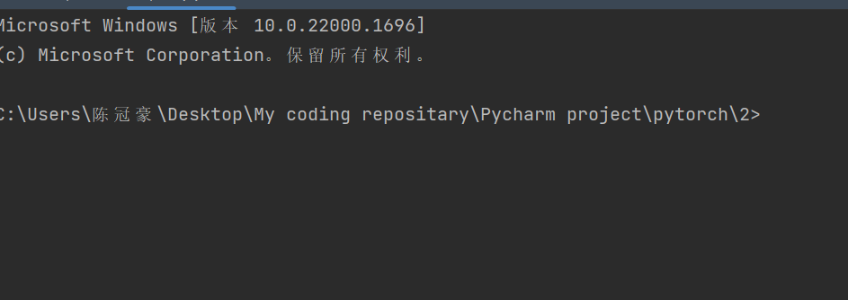
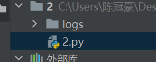

pytorch 1
Pytorch学习
学习加载数据集
我们首先需要学会导入数据集。在Pytorch里，负责导入数据集的有两个大类：DataSet 和DataLoader.
DataSet 可以认为是提供一种方式来获取数据和对应的标签
DataLoader为后面的网络提供不同的数据形式（需要dataSet来作为源数据集）
class Dataset(Generic[T_co]):
r"""An abstract class representing a :class:`Dataset`.
All datasets that represent a map from keys to data samples should subclass
it. All subclasses should overwrite :meth:`__getitem__`, supporting fetching a
data sample for a given key. Subclasses could also optionally overwrite
:meth:`__len__`, which is expected to return the size of the dataset by many
:class:`~torch.utils.data.Sampler` implementations and the default options
of :class:`~torch.utils.data.DataLoader`.
.. note::
:class:`~torch.utils.data.DataLoader` by default constructs a index
sampler that yields integral indices. To make it work with a map-style
dataset with non-integral indices/keys, a custom sampler must be provided.
"""
def __getitem__(self, index) -> T_co:
raise NotImplementedError
def __add__(self, other: 'Dataset[T_co]') -> 'ConcatDataset[T_co]':
return ConcatDataset([self, other])
# No `def __len__(self)` default?
# See NOTE [ Lack of Default `__len__` in Python Abstract Base Classes ]
# in pytorch/torch/utils/data/sampler.py
可以看到这是抽象类，需要我们重写DataSet 来运行：
from torch.utils.data import Dataset
from PIL import Image
import os
class Mydata(Dataset):
# 准备一下路径
def __init__(self,rootDir,label_dir):
"""
:param rootDir: the root image source
:param label_dir: whether it is ants or bees
"""
self.rootDir = rootDir
self.label_dir =label_dir
self.path = os.path.join(self.rootDir,self.label_dir)
self.imagePath = os.listdir(self.path)
#获取东西
def __getitem__(self, idx):
img_name = self.imagePath[idx]
img_item_path = os.path.join(self.path,img_name)
img = Image.open(img_item_path)
label = self.label_dir
return img,label
def __len__(self):
return len(self.imagePath)
rootDir = "hymenoptera_data/train"
labelDir = "ants"
ants_dataset = Mydata(rootDir,labelDir)
img,label = ants_dataset[0]
img.show()TensorBoard的基本使用
我们为了使用 tensorBoard可视化，需要在我们自己的源代码文件中引入 SummaryWriter类。
from torch.utils.tensorboard import SummaryWriter 我们就是在这里实现可视化的！
来看看简介怎么说
"""Writes entries directly to event files in the log_dir to be
consumed by TensorBoard.
The `SummaryWriter` class provides a high-level API to create an event file
in a given directory and add summaries and events to it. The class updates the
file contents asynchronously. This allows a training program to call methods
to add data to the file directly from the training loop, without slowing down
training.
""" 简单来讲。就是通过生成event file(事件文件)来预备可视化，在cmd或者是已经被激活的 pytorch环境下来整指令：
tensorboard --logdir=<logFileName> SummaryWriter的构造函数（ init ()）是这样说的：
def __init__(
self, # this 指针一样的东西
log_dir=None,
comment="",
purge_step=None,
max_queue=10,
flush_secs=120,
filename_suffix="",
):
"""Creates a `SummaryWriter` that will write out events and summaries
to the event file.
Args:
log_dir (str): Save directory location. Default is
runs/**CURRENT_DATETIME_HOSTNAME**, which changes after each run.
Use hierarchical folder structure to compare
between runs easily. e.g. pass in 'runs/exp1', 'runs/exp2', etc.
for each new experiment to compare across them.
comment (str): Comment log_dir suffix appended to the default
``log_dir``. If ``log_dir`` is assigned, this argument has no effect.
purge_step (int):
When logging crashes at step :math:`T+X` and restarts at step :math:`T`,
any events whose global_step larger or equal to :math:`T` will be
purged and hidden from TensorBoard.
Note that crashed and resumed experiments should have the same ``log_dir``.
max_queue (int): Size of the queue for pending events and
summaries before one of the 'add' calls forces a flush to disk.
Default is ten items.
flush_secs (int): How often, in seconds, to flush the
pending events and summaries to disk. Default is every two minutes.
filename_suffix (str): Suffix added to all event filenames in
the log_dir directory. More details on filename construction in
tensorboard.summary.writer.event_file_writer.EventFileWriter.
Examples::
from torch.utils.tensorboard import SummaryWriter
# create a summary writer with automatically generated folder name.
writer = SummaryWriter()
# folder location: runs/May04_22-14-54_s-MacBook-Pro.local/
# create a summary writer using the specified folder name.
writer = SummaryWriter("my_experiment")
# folder location: my_experiment
# create a summary writer with comment appended.
writer = SummaryWriter(comment="LR_0.1_BATCH_16")
# folder location: runs/May04_22-14-54_s-MacBook-Pro.localLR_0.1_BATCH_16/
""" 于是，我们实例化一个SummaryWriter,只需要告诉构造函数一个文件夹的名字即可
writer = SummaryWriter("logs")
# 产生一个logs文件夹，其事件文件就在里面！ 向里头输入样本点，比如说函数”y = x”，就需要加入：
for i in range(100):
writer.add_scalar("y = x",i,i) 不要忘记关闭文件流
writer.close()经验来了
首先，如果你打开终端，发现是PS控制台，那就麻烦你手动改成cmd控制台，他在Files - settings - tools - terminal里，选择CMD控制台

回到终端，他就是这样的了。

但是，这个时候输入 tensorboard —logdir=logs(你自己看看你指定的文件夹的名字是什么，比如说我的是这个，以及如果你发现你甚至没有log文件夹那就检查代码，去文件的上级找找，但大概率是你代码出错了！)

出现了上图的 bug，说明cmd没认识，不知道tensorboard.那就这样，输入
pip install tensorboard -i --trusted-host http://pypi.tuna.tsinghua.edu.cn/simple 这是使用pip 来下载tensorboard, 其中，后面信任域名是为了防止下图种类的报错
但是，即使这样，我还是遇到了另一个奇怪的错误：
这个时候马上换源即可，是源的问题
pip install tensorboard -i https://pypi.douban.com/simple --trusted-host https://pypi.douban.com/simple 
我们再试一次，成功了！
对了。如果发现端口冲突了，可以手动指定端口，就是在指令的后面在塞上一个—port=

下面来看图片的添加！在Pytorch下，我们使用add_image来添加图片
def add_image(
self, tag, img_tensor, global_step=None, walltime=None, dataformats="CHW"
):
"""Add image data to summary.
Note that this requires the ``pillow`` package.
Args:
tag (str): Data identifier
img_tensor (torch.Tensor, numpy.ndarray, or string/blobname): Image data
global_step (int): Global step value to record
walltime (float): Optional override default walltime (time.time())
seconds after epoch of event
dataformats (str): Image data format specification of the form
CHW, HWC, HW, WH, etc.
Shape:
img_tensor: Default is :math:`(3, H, W)`. You can use ``torchvision.utils.make_grid()`` to
convert a batch of tensor into 3xHxW format or call ``add_images`` and let us do the job.
Tensor with :math:`(1, H, W)`, :math:`(H, W)`, :math:`(H, W, 3)` is also suitable as long as
corresponding ``dataformats`` argument is passed, e.g. ``CHW``, ``HWC``, ``HW``.
Examples::
from torch.utils.tensorboard import SummaryWriter
import numpy as np
img = np.zeros((3, 100, 100))
img[0] = np.arange(0, 10000).reshape(100, 100) / 10000
img[1] = 1 - np.arange(0, 10000).reshape(100, 100) / 10000
img_HWC = np.zeros((100, 100, 3))
img_HWC[:, :, 0] = np.arange(0, 10000).reshape(100, 100) / 10000
img_HWC[:, :, 1] = 1 - np.arange(0, 10000).reshape(100, 100) / 10000
writer = SummaryWriter()
writer.add_image('my_image', img, 0)
# If you have non-default dimension setting, set the dataformats argument.
writer.add_image('my_image_HWC', img_HWC, 0, dataformats='HWC')
writer.close()
Expected result:
.. image:: _static/img/tensorboard/add_image.png
:scale: 50 %
"""
torch._C._log_api_usage_once("tensorboard.logging.add_image")
if self._check_caffe2_blob(img_tensor):
from caffe2.python import workspace
img_tensor = workspace.FetchBlob(img_tensor)
self._get_file_writer().add_summary(
image(tag, img_tensor, dataformats=dataformats), global_step, walltime
) 是的，当我们加载图片的时候，函数的参数接受Tensor类型的图片和ndarray类型，这就需要我们调用API来进行转化
from torch.utils.tensorboard import SummaryWriter
from PIL import Image
import numpy as np
writer = SummaryWriter("logs")
imgPath = "hymenoptera_data/train/ants/0013035.jpg"
imgPIL = Image.open(imgPath)
imgArray = np.array(imgPIL) # 转化
writer.add_image("test",imgArray,1,dataformats="HWC") #指明通道是如何的！
writer.close()